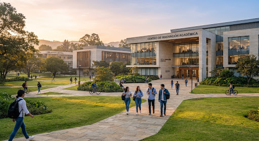

I Conversatorio
de Institutos Superiores Técnicos
"La Educación Técnica Superior frente a los desafíos del desarrollo socioproductivo"
Horario
15:30 a 18:00 hs
Lugar
Centro Tecnológico
(Ex Conectar Lab)
Propósito del Encuentro
Fortalecer el vínculo entre los Institutos Superiores de Formación Técnica (ISFT) y el sector socioproductivo para actualizar la formación técnica y potenciar las Prácticas Profesionalizantes. Un espacio dedicado a la sinergia institucional y el progreso educativo regional.
Visión Estratégica
"Conectando el talento joven con las demandas reales de la industria local."
Ejes de Diálogo
Líneas fundamentales que guiarán la mesa de conversación técnica.
Demandas actuales del sector productivo.
Competencias técnicas, digitales y transversales requeridas.
Fortalecimiento de las Prácticas Profesionalizantes.
Acuerdos de cooperación entre instituciones y organizaciones.
Participantes Clave
Actores estratégicos convocados para fomentar el diálogo y la colaboración técnica.
Sector Industrial
Unión Industrial de San Juan e invitados especiales del sector socioproductivo.
Gestión Institucional
Equipos directivos de Institutos Superiores de Formación Técnica (ISFT).
Académicos
Coordinadores y docentes expertos en Prácticas Profesionalizantes.
Resultados Esperados
Documento técnico con recomendaciones para fortalecer las Prácticas Profesionalizantes.
Potenciar la vinculación estratégica con el sector socioproductivo regional.
Promover acciones conjuntas entre Institutos Superiores y sectores productivos.

Documentos para descargar.
Flayer
Primer Conversatorio de Institutos Superiores Técnicos.
Contacto
¿Tienes dudas sobre la jornada o necesitas más información? Escríbenos.
Sede del Evento
Dirección
Las Heras (Norte), Juan Bautista Alberdi esquina, San Juan
Instalaciones
CENTRO Tecnológico (Ex Conectar Lab)